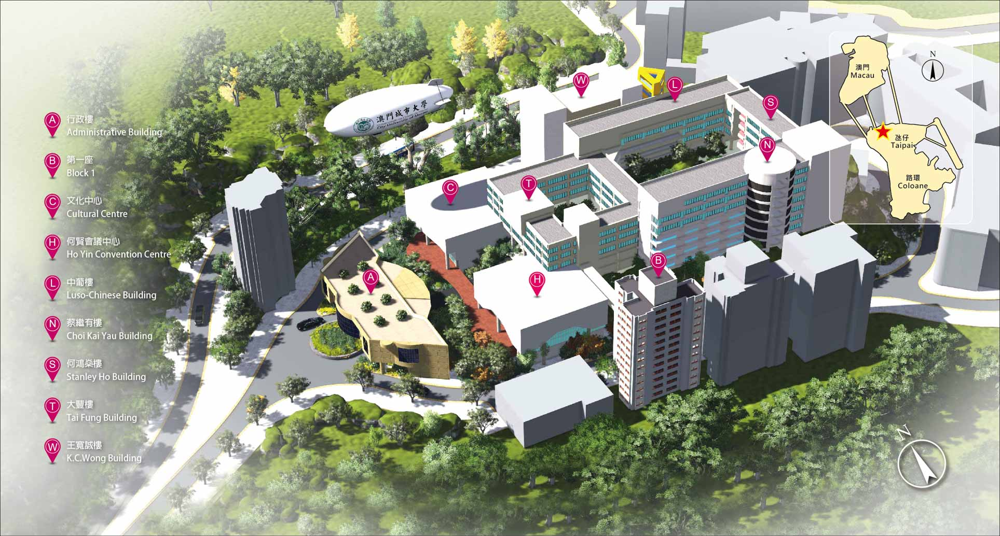

Venue Overview
The City University of Macau (CityU Macau), formerly known as the University of East Asia founded in 1981 and renamed in 2011, follows a strategic development outline of “Rename, Restructure, Transform, Upgrade” as it advances disciplines in digital humanities, arts, business, finance, emerging engineering, and social sciences to become a fully-fledged metropolitan university. As a leading education provider, the University shoulders the social responsibility of “Serving Macao, Integrating into Greater Bay Area” by nurturing high-caliber professionals aligned with its motto of “Virtue, Knowledge, Practice,” while sparing no effort to provide the intellectual and academic support necessary to promote local and regional development within the integrated Guangdong-Hong Kong-Macao Greater Bay Area.
City University of Macau
澳門城市大學
Campus Map

{kind=link}
Entry Requirements & Visas
Most international travelers and participants are exempted from a visa or entry permit for Macao for a stay ranging from 7 to 90 days, depending on their nationality.
To confirm if your country is on the visa-free list or to find details on how to apply for an entry permit upon arrival, please consult the official Macao SAR Government Service Portal:
👉 Official Visa-Free Nationalities & Entry Requirements
Note: Please ensure your travel document is valid for at least six months beyond the date of your intended stay.
Transportation and Accessibility
By Air ✈️ (International Arrivals)
Most international guests will arrive via one of the two major hubs in the region:
- Macau International Airport (MFM): The most convenient option. Upon arrival, the campus is only a 10-minute drive away.
- Hong Kong International Airport (HKIA): A major global gateway.
- SkyPier Terminal (Direct Transit): You can transfer directly to Macau via the HKIA Direct Bus or a ferry without clearing Hong Kong immigration. Your checked luggage can be transferred directly to Macau.
- HZMB Bridge Transfer: After clearing Hong Kong customs, take the B4 bus to the HZMB Hong Kong Port to board the 24-hour Golden Bus shuttle to Macau.
- HKIA–Macau route: Another option is the sea link between Hong Kong International Airport and Macau; schedules and details are published on TurboJET’s Hong Kong–Macau ferry route page.
By Land 🚄 (Mainland China & High-Speed Rail)
From Mainland China, rail reaches two stations beside the border. Cross on foot at the port under each station.
- Zhuhai Railway Station (珠海站): High-speed rail from cities such as Guangzhou, Beijing, and Shanghai.
- Gongbei Port / Border Gate: Main crossing; next to the station.
- Qingmao Port: 24-hour pedestrian crossing nearby; often quieter than Gongbei.
- Hengqin Railway Station (橫琴站): About 20 minutes by intercity train from Zhuhai Railway Station.
- Hengqin Port: 24-hour crossing beside the station; into Taipa and Cotai (near campus).
By Sea 🛥️ (Regional Ferry Routes)
Macau is well-connected by high-speed ferry to surrounding cities:
- From Hong Kong: High-speed ferries to Macau use the Hong Kong–Macau Ferry Terminal (Sheung Wan). Schedules and booking: Cotai Water Jet · TurboJET (Hong Kong–Macau route).
- From Shenzhen: Direct ferries are available from Shenzhen Shekou Port and Shenzhen Airport (Fuyong Port) to both the Taipa Ferry Terminal and the Outer Harbour Ferry Terminal.
- Note: The Taipa Ferry Terminal is the recommended arrival point for its proximity to the campus.
Getting to City University of Macau (Taipa Campus) 🏫
Once you arrive at your chosen entry point in Macau, use the following guide to reach the campus (Avenida Padre Tomás Pereira, Taipa). You can navigate using Amap (高德地图) and Google Maps.
| Arrival Point 📍 | Taxi (Approx. Time & Cost) 🚕 | Public Bus (Flat Fare: MOP 6) 🚌 |
|---|---|---|
| Macau International Airport | 10 mins / ~MOP 45 | AP1 or AP1X — Stop: Jardim Hoi Van (海灣花園 / 海城閣) |
| HZMB Macau Port | 20 mins / ~MOP 135 | 102X — Stop: Av. Sun Yat Sen / CTM (氹仔電訊) |
| Taipa Ferry Terminal | 8 mins / ~MOP 55 | 26 — Stop: Est. Alm. M. Correia (高勵雅馬路) |
| Gongbei Port (Border Gate) / Qingmao | 15 mins / ~MOP 80 | 25B — Stop: Esparteiro / Regency (史伯泰 / 麗景灣) |
| Hengqin Port | 15 mins / ~MOP 105 | 25B or 102X — Stop: Av. Sun Yat Sen / CTM (氹仔電訊) |
| Outer Harbour Terminal | 15 mins / ~MOP 95 | AP1 — Stop: Jardim Hoi Van (海灣花園 / 海城閣) |
💡 Important Notes for Guests:
- Currency & Payment: In Macau, MOP, CNY, and HKD are widely accepted at a 1:1:1 ratio for most local transactions and transportation. Please note that change is usually given in MOP.
- Navigation: After alighting from your bus or taxi, follow campus signage and walk up the slope to the main university entrance.
- Local Rail: The Macau Light Rapid Transit (LRT) has stations at the Airport and Taipa Ferry Terminal, providing a scenic and modern way to travel around the Taipa/Cotai area.